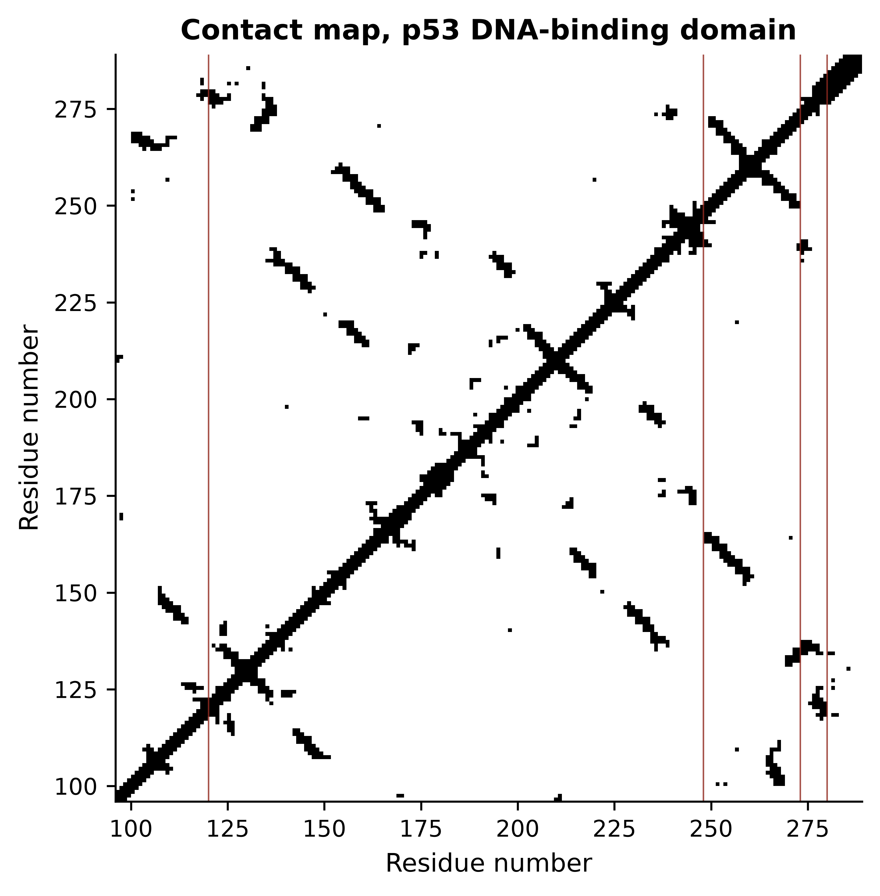
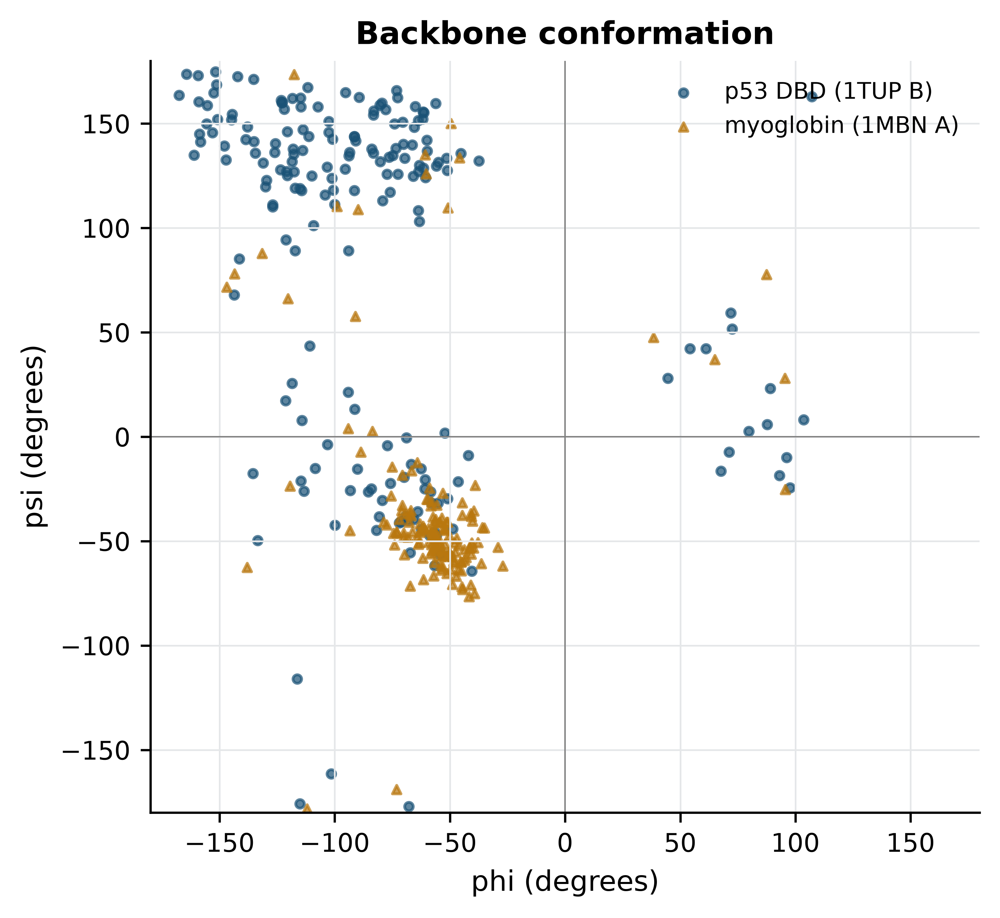
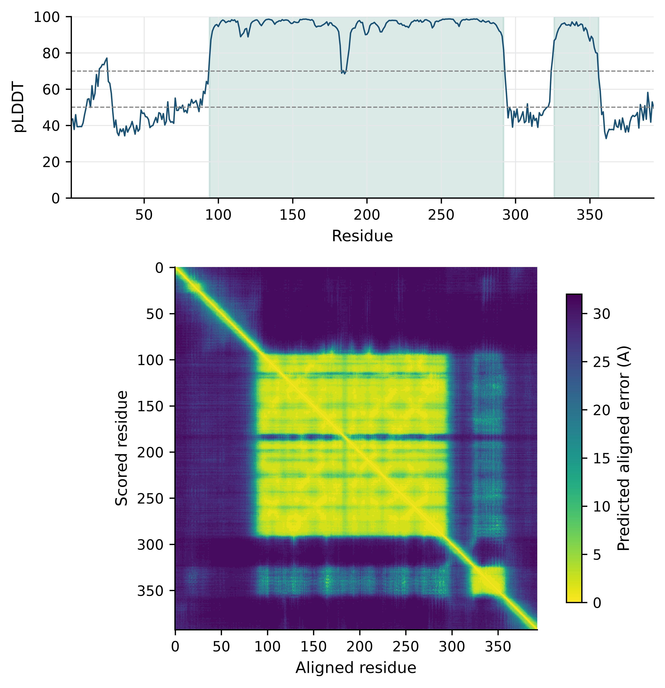

import sys; sys.path.insert(0, "..")
from pybfx import book_data, style, PALETTE
style()
import warnings
import numpy as np
import matplotlib.pyplot as plt
from Bio.PDB import PDBParser, Superimposer, PPBuilder
warnings.simplefilter("ignore") # PDBParser warns about 1970s formatting quirks
parser = PDBParser(QUIET=True)10 Protein structure and what you can compute from it
After working through this chapter you will be able to
- relate the four levels of protein structure to the forces that hold each one together
- judge the reliability of an experimental structure from its resolution, R factors, B factors and missing residues
- parse a PDB or mmCIF file with Bio.PDB and navigate its structure–model–chain–residue–atom hierarchy
- compute residue counts, inter-atomic distances, contact maps, a radius of gyration and an approximate secondary-structure content from coordinates
- superpose two structures and interpret the resulting RMSD
- explain what pLDDT and predicted aligned error measure, and diagnose a predicted model from them
- state the specific limits of a predicted structure in a docking or mutation study
A protein sequence is a one-dimensional object and a protein is not. Almost everything a protein does — binding a ligand, catalysing a reaction, recognising a specific stretch of DNA — is a property of the three-dimensional arrangement its chain folds into, and that arrangement is what a structure file records. Learning to work with those files means learning two things at once: how to extract geometric quantities from coordinates, and how to decide how much of the model in front of you is measurement and how much is interpretation.
This chapter works with three bundled structures. The first is data/structures/1tup.pdb, the DNA-binding domain of human p53 bound to a response element (Cho et al. 1994), which contains three copies of the protein, two DNA strands and three zinc ions, and is therefore a small course in everything that can appear in a crystal structure. The second is data/structures/1mbn.pdb, sperm whale myoglobin (Kendrew et al. 1958) — the first protein structure ever solved, and a useful contrast because it is almost entirely helical where p53 is almost entirely β-sheet. The third is the AlphaFold model of full-length p53, data/structures/AF-P04637-F1-model.pdb, with its predicted aligned error matrix in data/structures/AF-P04637-F1-confidence.json.
By the end you will have interrogated the metadata of a 1995 crystal structure and a 1973 one, measured the zinc coordination geometry of p53, identified the residues that touch DNA, superposed three copies of the same domain and reported real RMSDs, and compared a predicted structure with the experiment it can be checked against — which is the only honest way to learn what a confidence score is worth.
10.1 Setting up
10.2 From sequence to fold
The primary structure is the covalent sequence of amino acids, written from the free amino terminus to the free carboxyl terminus. It is the only level encoded directly in the gene, and in principle it determines all the others.
Secondary structure is local, regular backbone geometry stabilised by hydrogen bonds between backbone amide and carbonyl groups. The α-helix has 3.6 residues per turn and a hydrogen bond from the carbonyl of residue i to the amide of residue i + 4; the β-strand is extended, and strands hydrogen-bond to each other side by side to form parallel or antiparallel sheets. Turns and loops connect them. Because secondary structure is defined by hydrogen-bond patterns rather than by sequence, it is assigned from coordinates, and the standard assignment algorithm is DSSP (Kabsch and Sander 1983).
Tertiary structure is the three-dimensional arrangement of the whole chain, and the forces holding it together are weak individually and decisive in aggregate. The hydrophobic effect dominates: burying non-polar side chains away from water increases the entropy of the solvent, and this is what drives collapse into a compact globule with a non-polar core. Hydrogen bonds and salt bridges give specificity, selecting one fold among the many compact arrangements available. Disulphide bonds between cysteines are the only covalent cross-links, and are largely confined to secreted and extracellular proteins because the cytoplasm is reducing. Metal coordination can be structural in the same way, as it is in p53: Section 10.5 measures the zinc site that holds its DNA-binding surface in shape.
Quaternary structure is the assembly of several chains into a functional complex. Full-length p53 works as a tetramer, and 1TUP contains three copies of its DNA-binding domain in the crystal’s asymmetric unit — which, as Section 10.6 shows, is not the same statement as “p53 is a trimer”.
10.3 How structures are determined, and how to judge one
X-ray crystallography measures the diffraction pattern of a crystal and reconstructs an electron density map, into which a model is built and refined. It remains the source of most structures and of nearly all high-resolution ones. Nuclear magnetic resonance (NMR) spectroscopy measures distance and angle restraints on a protein in solution and reports an ensemble of models consistent with them, which is why an NMR entry contains many models rather than one. Cryo-electron microscopy images many copies of a particle frozen in vitreous ice and averages them computationally; it has become the method of choice for large assemblies and for anything that will not crystallise.
What matters for an analyst is not the method but the quality metrics each one reports, because a structure is a model fitted to data and models can be fitted badly. For a crystal structure, four numbers and one list carry most of the information.
Resolution, in ångströms, states the finest spacing of diffraction data used. At 1.5 Å individual atoms are separable and water molecules are placed confidently; at 2.5 Å side-chain positions are inferred as much as observed; beyond 3.5 Å only the backbone fold and the largest side chains are reliable. Smaller is better, which inverts the usual reading of a number.
R factor measures the disagreement between the diffraction amplitudes the model predicts and those observed. R-free is the same quantity computed on a few per cent of reflections deliberately withheld from refinement, and it is the trustworthy one: the working R can always be driven down by adding parameters, whereas R-free rises when a model is over-fitted. A modern structure at 2 Å should have R-free near 0.20–0.25, and an R-free more than about 0.07 above the working R is a warning sign.
def crystallographic_metadata(path):
"""Pull the fields a reader needs to judge a crystal structure from its header."""
wanted = {"EXPDTA": None, "RESOLUTION": None, "R VALUE": None, "FREE R VALUE": None}
for line in open(path):
if line.startswith("EXPDTA"):
wanted["EXPDTA"] = line[10:].strip()
elif line.startswith("REMARK 2 RESOLUTION"):
wanted["RESOLUTION"] = line[23:].strip()
elif line.startswith("REMARK 3 R VALUE (WORKING SET)"):
wanted["R VALUE"] = line.split(":")[-1].strip()
elif line.startswith("REMARK 3 FREE R VALUE ") and wanted["FREE R VALUE"] is None:
wanted["FREE R VALUE"] = line.split(":")[-1].strip()
return wanted
for name in ("1tup.pdb", "1mbn.pdb"):
print(name, crystallographic_metadata(book_data("structures", name)))
#> 1tup.pdb {'EXPDTA': 'X-RAY DIFFRACTION', 'RESOLUTION': '2.20 ANGSTROMS.', 'R VALUE': '0.202', 'FREE R VALUE': 'NULL'}
#> 1mbn.pdb {'EXPDTA': 'X-RAY DIFFRACTION', 'RESOLUTION': '2.00 ANGSTROMS.', 'R VALUE': 'NULL', 'FREE R VALUE': 'NULL'}Both entries are X-ray structures, 1TUP at 2.20 Å and 1MBN at 2.00 Å, and both illustrate that the metadata you want is sometimes simply absent. 1TUP reports a working R of 0.202 and no R-free at all, because it was deposited in 1995, when cross-validation was new. 1MBN, deposited in 1973, reports no R factor whatsoever. Neither omission makes the structures wrong, and 1MBN is one of the most important models ever built; but it does mean that a claim resting on a precise atomic position in either file cannot be checked in the usual way. Date of deposition is part of a structure’s quality assessment.
B factors — the temperature or displacement factors — record how much each atom’s position is smeared out, by thermal motion or by disorder between copies in the crystal. They are per-atom, they are in Ų, and they are the most under-used field in the file.
Missing residues are the fifth thing to check, and they are recorded in REMARK 465 rather than in the coordinates, so code that only reads ATOM records will never see them. A residue absent from the model was not absent from the protein: it was mobile enough that no density could be assigned to it.
def missing_residues(path):
"""Residues listed in REMARK 465 as present in the protein but not in the model."""
missing, in_table = [], False
for line in open(path):
if line.startswith("REMARK 465 M RES C SSSEQI"):
in_table = True
elif in_table and line.startswith("REMARK 465"):
fields = line[15:].split()
if len(fields) >= 3:
missing.append((fields[1], int(fields[2])))
return missing
gaps = missing_residues(book_data("structures", "1tup.pdb"))
print(f"{len(gaps)} residues modelled nowhere in 1TUP")
#> 72 residues modelled nowhere in 1TUP
for chain in "ABC":
numbers = sorted(n for c, n in gaps if c == chain)
print(f" chain {chain}: {len(numbers):2d} missing; "
f"N-terminal {[n for n in numbers if n < 150]}, "
f"C-terminal {numbers[-1] - len([n for n in numbers if n >= 150]) + 1}"
f"-{numbers[-1]}")
#> chain A: 23 missing; N-terminal [], C-terminal 290-312
#> chain B: 25 missing; N-terminal [94, 95], C-terminal 290-312
#> chain C: 24 missing; N-terminal [94], C-terminal 290-312Seventy-two residues are missing across the three protein chains, all of them at the chain termini: the construct extends beyond the ordered domain and those tails are disordered in the crystal. Section 10.7 returns to this, because the AlphaFold model of the same protein assigns exactly those regions its lowest confidence, which is not a coincidence.
A deposited structure is a model, not an observation
The observation is the diffraction pattern or the micrograph. The coordinates are somebody’s interpretation of it, refined against restraints that encode prior expectations about bond lengths and angles. Side chains with weak density are often placed in their most common rotamer, ligands are sometimes modelled more confidently than the density supports, and alternate conformations may be collapsed into one. Before building an argument on a specific atomic contact, check the B factors of the atoms involved, check whether the residue is in a region of weak density, and where it matters, look at the wwPDB validation report for the entry.
10.4 The PDB file and its mmCIF successor
The PDB format is a fixed-column text format designed in the 1970s for punched cards, and its limits are those of that design: a one-character chain identifier, a five-character atom serial number and a four-character residue number. Structures larger than roughly 100,000 atoms or 62 chains cannot be represented at all. mmCIF replaced it as the archive’s master format and has no such limits, being a dictionary of named data items rather than fixed columns; every entry in the Protein Data Bank (Berman 2000; Burley et al. 2022) is now distributed in both. Use mmCIF for anything large or recent, and read PDB files fluently because thirty years of software emits them.
Each coordinate line begins ATOM for a polymer atom or HETATM for anything else — ligands, metals, water, modified residues — and carries an atom name, an alternate location indicator, a residue name, a chain, a residue number, three Cartesian coordinates in ångströms, an occupancy and a B factor.
with open(book_data("structures", "1tup.pdb")) as handle:
first_atom = next(line for line in handle if line.startswith("ATOM"))
fields = [("record", 0, 6), ("serial", 6, 11), ("atom name", 12, 16),
("altLoc", 16, 17), ("residue", 17, 20), ("chain", 21, 22),
("resSeq", 22, 26), ("x", 30, 38), ("y", 38, 46), ("z", 46, 54),
("occupancy", 54, 60), ("B factor", 60, 66), ("element", 76, 78)]
for name, start, end in fields:
print(f"{name:10s} = {first_atom[start:end].strip()!r}")
#> record = 'ATOM'
#> serial = '1'
#> atom name = "O5'"
#> altLoc = ''
#> residue = 'DT'
#> chain = 'E'
#> resSeq = '1001'
#> x = '25.930'
#> y = '6.224'
#> z = '81.661'
#> occupancy = '1.00'
#> B factor = '67.33'
#> element = 'O'Bio.PDB (Cock et al. 2009) parses this into a hierarchy that is worth learning by name: Structure contains Models, a model contains Chains, a chain contains Residues and a residue contains Atoms. Each residue carries a three-part identifier whose first element is a hetero-flag: " " for a standard polymer residue, "W" for water, "H_XXX" for any other heteroatom group. Filtering on that flag is how you separate protein from solvent, and forgetting to do it is the commonest beginner’s error in structural scripting.
structure = parser.get_structure("1tup", book_data("structures", "1tup.pdb"))
model = structure[0]
for chain in model:
polymer = [r for r in chain if r.id[0] == " "]
waters = [r for r in chain if r.id[0] == "W"]
other = sorted({r.get_resname() for r in chain if r.id[0] not in (" ", "W")})
print(f"chain {chain.id}: {len(polymer):3d} polymer residues, "
f"{len(waters):3d} waters, heteroatoms {other}")
#> chain E: 21 polymer residues, 22 waters, heteroatoms []
#> chain F: 21 polymer residues, 14 waters, heteroatoms []
#> chain A: 196 polymer residues, 198 waters, heteroatoms ['ZN']
#> chain B: 194 polymer residues, 70 waters, heteroatoms ['ZN']
#> chain C: 195 polymer residues, 80 waters, heteroatoms ['ZN']The output describes the crystal’s asymmetric unit precisely: three protein chains of about 195 residues each, two 21-nucleotide DNA strands, one zinc ion per protein chain and a few hundred ordered waters. Chains A, B and C are the same protein, and chains E and F are the two strands of one double helix.
10.5 Measuring a structure
Everything beyond this point is arithmetic on coordinates. The first and most basic operation is a distance, and the right first question to ask of p53’s zinc is which atoms hold it.
zinc = next(atom for atom in model["A"].get_atoms() if atom.element == "ZN")
protein_atoms = [atom for residue in model["A"] if residue.id[0] == " "
for atom in residue]
distances = sorted((atom - zinc, atom) for atom in protein_atoms)
for distance, atom in distances[:4]:
residue = atom.get_parent()
print(f"Zn - {residue.get_resname()}{residue.id[1]:>4} {atom.get_id():<4} "
f"{distance:.2f} A")
#> Zn - HIS 179 ND1 1.99 A
#> Zn - CYS 242 SG 2.23 A
#> Zn - CYS 238 SG 2.28 A
#> Zn - CYS 176 SG 2.33 AThe zinc is held by Cys176, His179, Cys238 and Cys242 at 1.99–2.33 Å, which is textbook tetrahedral coordination geometry. This is a structural metal, not a catalytic one: it staples together two loops that form part of the DNA-binding surface, which is why mutations at these four residues are inactivating even though none of them touches DNA.
Asking which residues do touch DNA is the same calculation applied to two sets of atoms, and it is worth doing for all three protein chains rather than one.
dna_atoms = np.array([atom.coord for chain in "EF" for residue in model[chain]
if residue.id[0] == " " for atom in residue])
for chain_id in "ABC":
atoms = [atom for residue in model[chain_id] if residue.id[0] == " "
for atom in residue]
coords = np.array([atom.coord for atom in atoms])
separations = np.linalg.norm(coords[:, None, :] - dna_atoms[None, :, :], axis=2)
close = {atoms[i].get_parent() for i in np.where(separations.min(axis=1) < 4.0)[0]}
labels = sorted(f"{r.get_resname()}{r.id[1]}" for r in close)
print(f"chain {chain_id}: {len(labels)} residues within 4 A of DNA: {labels}")
#> chain A: 4 residues within 4 A of DNA: ['GLN165', 'GLN167', 'HIS168', 'LYS101']
#> chain B: 12 residues within 4 A of DNA: ['ALA119', 'ALA276', 'ARG248', 'ARG273', 'ARG280', 'ARG283', 'ASN239', 'CYS275', 'CYS277', 'LYS120', 'MET243', 'SER241']
#> chain C: 4 residues within 4 A of DNA: ['ARG248', 'LYS120', 'SER121', 'SER241']Only chain B is bound in the major groove; chains A and C make a few peripheral contacts and are, in effect, crystallographic neighbours. The twelve residues of chain B are the biologically important result: Lys120, Ser241, Arg248, Arg273, Arg280 and Arg283 are among the most frequently mutated positions in human cancer (Kato et al. 2003), and the structure explains why. Arg248 reaches into the minor groove, Arg273 contacts the phosphate backbone and Arg280 reads a base directly, so a substitution at any of them abolishes specific binding without unfolding the protein — which is exactly the pattern seen when p53 variants are assayed systematically (Giacomelli et al. 2018).
A contact map generalises this to the whole chain: a matrix in which entry (i, j) is set when residues i and j are closer than some cut-off. It is the two-dimensional shadow of a three-dimensional fold, and it makes secondary structure visible. 1 shows it for chain B.
residues = [r for r in model["B"] if r.id[0] == " " and "CA" in r]
ca_coords = np.array([r["CA"].coord for r in residues])
numbers = [r.id[1] for r in residues]
contact = np.linalg.norm(ca_coords[:, None, :] - ca_coords[None, :, :], axis=2) < 8.0
fig, ax = plt.subplots(figsize=(5, 5))
ax.imshow(contact, cmap="Greys", origin="lower",
extent=[numbers[0], numbers[-1], numbers[0], numbers[-1]])
for position in (120, 248, 273, 280):
ax.axvline(position, color=PALETTE[3], linewidth=0.6, alpha=0.8)
ax.set_xlabel("Residue number")
ax.set_ylabel("Residue number")
ax.set_title("Contact map, p53 DNA-binding domain")
ax.grid(False)
fig.tight_layout()
The map is almost entirely off-diagonal bands running at right angles to the main diagonal. Each such band is a pair of antiparallel β-strands: residue i contacts residue j, residue i + 1 contacts j − 1, and so on. A parallel sheet would give bands running parallel to the diagonal instead, and an α-helical protein gives a thick diagonal with little else. The DNA-contacting positions marked in red are scattered across the sequence and adjacent in space, which is the general lesson of a contact map: a binding site is a property of the fold, not of a stretch of sequence.
Secondary-structure content can be estimated from the backbone dihedral angles φ and ψ, which is what Figure 10.2 plots. This is an approximation to what DSSP computes from hydrogen bonds, and it is reported here as one.
import math
def dihedrals(chain):
"""(phi, psi) in degrees for every residue with both angles defined."""
angles = []
for peptide in PPBuilder().build_peptides(chain):
for phi, psi in peptide.get_phi_psi_list():
if phi is not None and psi is not None:
angles.append((math.degrees(phi), math.degrees(psi)))
return np.array(angles)
myoglobin = parser.get_structure("1mbn", book_data("structures", "1mbn.pdb"))[0]
p53_angles = dihedrals(model["B"])
mb_angles = dihedrals(myoglobin["A"])
fig, ax = plt.subplots(figsize=(5, 4.6))
ax.scatter(*p53_angles.T, s=9, alpha=0.7, color=PALETTE[0], label="p53 DBD (1TUP B)")
ax.scatter(*mb_angles.T, s=9, alpha=0.7, color=PALETTE[2], marker="^",
label="myoglobin (1MBN A)")
ax.axhline(0, color="grey", linewidth=0.5)
ax.axvline(0, color="grey", linewidth=0.5)
ax.set_xlim(-180, 180); ax.set_ylim(-180, 180)
#> (-180.0, 180.0)
#> (-180.0, 180.0)
ax.set_xlabel("phi (degrees)"); ax.set_ylabel("psi (degrees)")
ax.set_title("Backbone conformation")
ax.legend(loc="upper right", fontsize=8)
fig.tight_layout()
The two proteins separate cleanly. Classifying each residue by which region it falls in puts numbers on that impression.
def classify(angles):
"""Crude phi/psi classification; DSSP uses hydrogen bonds and is more accurate."""
phi, psi = angles[:, 0], angles[:, 1]
helix = (phi > -160) & (phi < -20) & (psi > -120) & (psi < 50)
strand = (phi > -180) & (phi < -40) & ((psi > 90) | (psi < -150)) & ~helix
return {"helix": helix.mean(), "strand": strand.mean(),
"other": 1 - helix.mean() - strand.mean()}
for name, angles in (("p53 DBD", p53_angles), ("myoglobin", mb_angles)):
fractions = classify(angles)
print(f"{name:10s} " + " ".join(f"{k} {100 * v:4.1f}%" for k, v in fractions.items()))
#> p53 DBD helix 27.1% strand 62.5% other 10.4%
#> myoglobin helix 86.8% strand 6.6% other 6.6%Myoglobin is about 86% helical by this measure and p53’s DNA-binding domain about 62% β-strand: a globin and a β-sandwich, which is what their classifications say. Treat the percentages as approximate — a dihedral-based rule has no way to tell a strand from an extended loop, and DSSP would assign several per cent differently — but the contrast between the two folds is far larger than the method’s error.
One more global quantity is worth computing, because it is the cheapest check that a structure is compact at all. The radius of gyration is the root-mean-square distance of atoms from their centre of mass.
def radius_of_gyration(atoms):
coords = np.array([atom.coord for atom in atoms])
return float(np.sqrt(((coords - coords.mean(axis=0)) ** 2).sum(axis=1).mean()))
for label, chain in (("p53 DBD (1TUP B)", model["B"]), ("myoglobin (1MBN A)", myoglobin["A"])):
atoms = [atom for residue in chain if residue.id[0] == " " for atom in residue]
print(f"{label:20s} {len(atoms):5d} atoms, Rg = {radius_of_gyration(atoms):.1f} A")
#> p53 DBD (1TUP B) 1522 atoms, Rg = 16.2 A
#> myoglobin (1MBN A) 1216 atoms, Rg = 15.3 ABoth sit near 15–16 Å, which is what a compact single domain of 150–200 residues should give; a folded globular protein’s radius of gyration scales roughly as the cube root of its residue count. Section 10.7 uses the same function on a structure that is not compact, and the number immediately says so.
10.6 Superposing structures and reading an RMSD
Comparing two structures means first removing the arbitrary part of the comparison. The coordinates in a PDB file are expressed in a frame chosen by the crystallographer, so two identical molecules can have completely different coordinates. Superposition finds the rotation and translation that minimise the root-mean-square deviation between two sets of paired atoms, which is a solved problem with a closed-form answer (Kabsch and Sander 1983). Bio.PDB’s Superimposer implements it.
def alpha_carbons(chain_id):
"""Cα atoms of one chain, indexed by residue number so chains can be paired."""
return {residue.id[1]: residue["CA"] for residue in model[chain_id]
if residue.id[0] == " " and "CA" in residue}
chains = {c: alpha_carbons(c) for c in "ABC"}
superimposer = Superimposer()
for first, second in (("A", "B"), ("A", "C"), ("B", "C")):
shared = sorted(set(chains[first]) & set(chains[second]))
superimposer.set_atoms([chains[first][n] for n in shared],
[chains[second][n] for n in shared])
print(f"chain {first} vs chain {second}: {len(shared)} Ca pairs, "
f"RMSD = {superimposer.rms:.2f} A")
#> chain A vs chain B: 194 Ca pairs, RMSD = 0.84 A
#> chain A vs chain C: 195 Ca pairs, RMSD = 1.03 A
#> chain B vs chain C: 194 Ca pairs, RMSD = 0.78 AThe three copies of the same domain in one crystal differ by 0.78–1.03 Å over about 195 Cα atoms. That number is the chapter’s most useful calibration, because it is a lower bound on what “the same structure” means: three chemically identical molecules, in one crystal, refined against one dataset, still disagree by about one ångström. An RMSD of 2 Å between two structures of the same protein from different crystals is therefore not evidence of a conformational change, and an RMSD of 5 Å between a model and an experiment does not mean the model is wrong in any interesting way — it may mean a domain has rotated about a hinge while every domain is individually correct.
Two cautions follow. RMSD is dominated by the worst-fitting atoms, because it squares the deviations, so a single badly placed loop can double it while the core is perfect; quoting it alongside the number of atoms aligned is essential, and inspecting per-residue deviations is better than either. And superposition requires a correspondence between atoms, which is easy here — the chains are identical and share residue numbering — and hard between homologues, where the alignment itself becomes part of the answer. Structural alignment programs solve that by optimising correspondence and superposition together, and they are what you need when sequence identity falls below about 25%.
The asymmetric unit is not the biological unit
1TUP contains three protein chains, but p53 does not function as a trimer. What a crystal structure contains is the asymmetric unit: whatever happened to pack into the repeating box of that crystal. The biological assembly — the oligomer that exists in solution — is a separate annotation, derived from the crystal symmetry and from experiment, and the PDB distributes it as a separate file. Counting chains in a coordinate file and reporting the answer as a stoichiometry is a common and avoidable error.
10.7 Predicted structures and what their confidence means
Experimental structures exist for a small fraction of known proteins, so prediction fills the gap. Homology modelling is the classical approach and still a reasonable one: find an experimental structure of a homologue, align the target sequence to the template’s, copy the backbone where they align, rebuild the loops where they do not, and repack the side chains. Its accuracy is governed almost entirely by the sequence identity to the template — above 50% a model is usually accurate to 1–2 Å in the core, below about 25% the alignment itself becomes unreliable and so does everything built on it — and it can never predict a fold that is not already in the database.
AlphaFold (Jumper et al. 2021) broke that dependence by learning the relationship between sequence and structure directly. It takes a multiple sequence alignment of the target’s homologues, reads correlated substitution patterns across that alignment as evidence that two positions are in contact, and refines a geometric representation of the whole chain until it is consistent. RoseTTAFold (Baek et al. 2021) arrived at comparable accuracy independently, and AlphaFold 3 (Abramson et al. 2024) extends the approach to complexes with nucleic acids, ligands and modifications. The AlphaFold Protein Structure Database (Varadi et al. 2021) distributes predictions for most of UniProt, including the model of p53 used here.
What matters in practice is that these models carry per-residue and per-pair confidence estimates, and that those estimates are informative. pLDDT is a predicted score on the 0–100 scale of the local distance difference test, reported per residue and stored in the B-factor column of the distributed PDB file. Above 90 the backbone and most side chains are reliable; 70–90 means the backbone is reliable; 50–70 is low confidence; below 50 the residue is very likely to be in a region with no fixed structure at all. The last point is the one most often missed: a low pLDDT is not only a statement about the prediction but frequently a correct prediction of disorder.
alphafold = parser.get_structure("af", book_data("structures",
"AF-P04637-F1-model.pdb"))[0]
af_residues = [r for r in alphafold["A"] if r.id[0] == " "]
plddt = np.array([r["CA"].get_bfactor() for r in af_residues])
domains = [("transactivation + proline-rich", 1, 93),
("DNA-binding domain", 94, 292),
("nuclear localisation linker", 293, 325),
("tetramerisation domain", 326, 356),
("C-terminal regulatory", 357, 393)]
print(f"{len(plddt)} residues, mean pLDDT {plddt.mean():.1f}")
#> 393 residues, mean pLDDT 75.1
for name, start, end in domains:
segment = plddt[start - 1:end]
print(f" {name:30s} {start:3d}-{end:3d} mean pLDDT {segment.mean():5.1f}")
#> transactivation + proline-rich 1- 93 mean pLDDT 48.4
#> DNA-binding domain 94-292 mean pLDDT 95.3
#> nuclear localisation linker 293-325 mean pLDDT 48.3
#> tetramerisation domain 326-356 mean pLDDT 91.3
#> C-terminal regulatory 357-393 mean pLDDT 43.4The model is a textbook illustration. The DNA-binding domain scores 95 and the tetramerisation domain 91 — both are folded, both have experimental structures — while the transactivation region, the linker and the C-terminal regulatory tail score 48, 48 and 43. Those low-scoring regions are not a failure of the method. They are intrinsically disordered in the protein, which is why no crystal structure of full-length p53 exists and why 1TUP’s construct stops where it does.
Predicted aligned error (PAE) answers a different question, and it is the one that decides whether a multi-domain model can be used at all. PAE at position (i, j) is the expected error in the position of residue i when the prediction and the true structure are superposed on residue j. Low PAE within a block of residues means that block is internally well predicted; low PAE between two blocks means their relative orientation is predicted too. High PAE between two confidently folded domains means each domain is reliable and the way they are arranged with respect to each other is not.
import json
with open(book_data("structures", "AF-P04637-F1-confidence.json")) as handle:
pae = np.array(json.load(handle)[0]["predicted_aligned_error"])
fig, (top, bottom) = plt.subplots(2, 1, figsize=(6, 6.2),
gridspec_kw={"height_ratios": [1, 2]})
top.plot(np.arange(1, len(plddt) + 1), plddt, color=PALETTE[0], linewidth=0.9)
for _, start, end in (domains[1], domains[3]):
top.axvspan(start, end, color=PALETTE[1], alpha=0.15)
#> <matplotlib.patches.Rectangle object at 0x17f832d50>
#> <matplotlib.patches.Rectangle object at 0x168a2aa50>
top.axhline(70, linestyle="--", color="grey", linewidth=0.7)
#> <matplotlib.lines.Line2D object at 0x17f7ca010>
top.axhline(50, linestyle="--", color="grey", linewidth=0.7)
#> <matplotlib.lines.Line2D object at 0x17f832d90>
top.set_xlim(1, len(plddt)); top.set_ylim(0, 100)
#> (1.0, 393.0)
#> (0.0, 100.0)
top.set_xlabel("Residue"); top.set_ylabel("pLDDT")
#> Text(0.5, 0, 'Residue')
#> Text(0, 0.5, 'pLDDT')
image = bottom.imshow(pae, cmap="viridis_r", origin="upper", vmin=0, vmax=32)
bottom.set_xlabel("Aligned residue"); bottom.set_ylabel("Scored residue")
#> Text(0.5, 0, 'Aligned residue')
#> Text(0, 0.5, 'Scored residue')
bottom.grid(False)
fig.colorbar(image, ax=bottom, label="Predicted aligned error (A)", shrink=0.85)
#> <matplotlib.colorbar.Colorbar object at 0x17f849b10>
fig.tight_layout()
Read the two panels together. The pLDDT trace is high across residues 94–292 and 326–356 and low everywhere else; the PAE matrix shows two yellow squares on the diagonal at exactly those positions, and high error everywhere between and around them. The model therefore supports statements about the internal geometry of either domain and supports no statement at all about where the tetramerisation domain sits relative to the DNA-binding domain. Taking the coordinates of the full-length model at face value and measuring a distance between the two domains would produce a number with no meaning.
Because p53’s DNA-binding domain has been solved experimentally, the prediction can be checked rather than merely believed.
experimental = alpha_carbons("B")
predicted = {r.id[1]: r["CA"] for r in af_residues if r.id[1] in experimental}
shared = sorted(predicted)
superimposer.set_atoms([experimental[n] for n in shared],
[predicted[n] for n in shared])
print(f"AlphaFold vs 1TUP chain B: {len(shared)} Ca pairs, "
f"RMSD = {superimposer.rms:.2f} A")
#> AlphaFold vs 1TUP chain B: 194 Ca pairs, RMSD = 0.73 A
whole_chain = [atom for residue in af_residues for atom in residue]
domain_only = [atom for residue in af_residues if 94 <= residue.id[1] <= 292
for atom in residue]
print(f"Rg, full-length model : {radius_of_gyration(whole_chain):.1f} A")
#> Rg, full-length model : 33.5 A
print(f"Rg, DNA-binding domain: {radius_of_gyration(domain_only):.1f} A")
#> Rg, DNA-binding domain: 16.6 AThe prediction reproduces the experimental domain to 0.73 Å over 194 Cα atoms — tighter than the 0.78–1.03 Å spread between the three experimental copies of that same domain measured in Section 10.6. For this domain, in other words, the prediction is at least as close to the crystal structure as the crystal structure is to itself. The radius of gyration makes the complementary point: 16.6 Å for the domain alone against 33.5 Å for the full-length model, which is not a compact protein but a pair of domains on disordered tethers, drawn in one arbitrary arrangement.
What a predicted structure cannot be used for
A high pLDDT is a statement about the backbone of a single chain in an unspecified state. It does not tell you which conformation of a flexible protein you are looking at, and AlphaFold reports one model where a transporter or kinase may have several functionally distinct states. Side-chain rotamers are predicted far less reliably than backbones, which is why docking into a predicted pocket gives systematically worse enrichment than docking into a crystal structure of the same protein. Ligands, metals, waters and post-translational modifications are absent from the model unless it was explicitly predicted with them, so a pocket may be modelled closed, or collapsed, simply because its ligand was not there. Mutation effects are not predicted: feeding a point-mutant sequence to a structure predictor and comparing the output with the wild-type model measures the predictor’s sensitivity, not the mutation’s consequence. Use predicted structures for fold assignment, domain boundaries, hypothesis generation and the interpretation of variants in a structural context — and say in your methods that the structure was predicted.
10.8 Comparing structures, and what structure-based design needs
Structure is more conserved than sequence, so two proteins can share a fold with no detectable sequence similarity. That fact is the basis of structural classification. SCOP and CATH are the two long-standing hierarchies: both group domains into folds, superfamilies and families, the first by expert judgement and the second by a mix of automatic and manual assignment. The useful products for an analyst are the domain definitions — where one structural unit stops and the next begins — and the statement that two proteins share a superfamily, which is evidence of common ancestry that sequence alone may not provide. Sequence-level domain resources such as Pfam (Mistry et al. 2020) and the integrated signatures of InterPro (Paysan-Lafosse et al. 2022) answer the same question more cheaply when a structure is unavailable.
Finding those relationships requires structural alignment, which differs from superposition in that the correspondence between residues is unknown and must be found. Algorithms differ in how they score a match and in whether they allow the chain order to change, and all of them return both an alignment and a similarity score that is normalised for length, because RMSD alone rewards short alignments. A score normalised by length is what makes “these two domains have the same fold” a statement that can be thresholded.
Molecular docking predicts how a small molecule binds a target: a search over the ligand’s position, orientation and rotatable bonds inside a defined pocket, scored by an empirical function that approximates binding free energy. AutoDock Vina (Trott and Olson 2009) is the most widely used open implementation. It is not installed in this book’s environment, so no docking is run here and no scores are quoted; what a Vina run would look like is shown below purely to make the shape of the workflow concrete.
vina --receptor p53_core.pdbqt --ligand compound.pdbqt \
--center_x 92.0 --center_y 20.5 --center_z 48.3 \
--size_x 24 --size_y 24 --size_z 24 --exhaustiveness 16Three things about that command matter more than the software. The receptor and ligand must be prepared — hydrogens added, protonation states chosen at the right pH, charges assigned — and those choices change the result more than most users expect. The search box must be defined, which means you must already know roughly where the site is; docking is not a site-finding method. And the output is a ranked list with scores in kcal/mol whose absolute values are not reliable binding affinities: docking scores rank poses adequately, rank compounds poorly, and predict affinity badly. A virtual screen is a filter that enriches a library for testing, not a measurement, and its hits are hypotheses for an assay.
Finally, visualisation. A structure viewer such as ChimeraX (Pettersen et al. 2020) is not an optional extra; looking at a structure catches errors that no script will, and every quantity computed in this chapter should be checked by eye at least once. Three habits make the difference between a figure that informs and one that decorates. Show only what the point requires — a cartoon of the backbone with three side chains drawn explicitly beats a full atomic model of everything. Colour by a quantity that carries information, such as B factor, pLDDT or chain, rather than by aesthetics. And state the viewpoint and what is hidden in the caption, because a structure figure is a projection and the reader cannot see what you rotated away.
10.9 Summary
- Secondary structure is local hydrogen bonding, tertiary structure is the fold driven mainly by the hydrophobic effect, and quaternary structure is the assembly. Only the first level is directly encoded in the sequence file.
- Judge a crystal structure by resolution, R-free, B factors and missing residues before using it. 1TUP reports no R-free and 1MBN no R factor at all, which is a fact about when they were deposited and a limit on what can be checked.
- Residues missing from a model are in
REMARK 465, not in the coordinates. Seventy-two residues of 1TUP are modelled nowhere, all at chain termini, and AlphaFold independently assigns those regions its lowest confidence. - Bio.PDB’s structure–model–chain–residue–atom hierarchy makes geometry a few lines of code: the zinc of p53 is held tetrahedrally by Cys176, His179, Cys238 and Cys242 at 1.99–2.33 Å, and only chain B of 1TUP is bound in the DNA major groove.
- A contact map turns a fold into a picture: bands perpendicular to the diagonal mean antiparallel β-strands, and the DNA-binding residues of p53 are scattered in sequence and adjacent in space.
- Three copies of one domain in one crystal differ by 0.78–1.03 Å. That is the scale against which any other RMSD should be read, and RMSD must always be quoted with the number of atoms aligned.
- pLDDT measures local confidence and predicted aligned error measures confidence in relative orientation. A model with two confident domains and high PAE between them supports no statement about their arrangement.
- The AlphaFold p53 DNA-binding domain matches chain B of the crystal structure to 0.73 Å, closer than the three experimental copies come to each other; its disordered regions score below 50, which is a correct prediction rather than a failure.
- Docking scores rank poses adequately and affinities badly. A virtual screen produces hypotheses for an assay, not measurements.
10.10 Exercises
- Compute the mean B factor of each of the three protein chains in 1TUP. Which chain is the best ordered, and does that agree with which chain is bound to DNA?
- Using
missing_residues, list the missing residues of chain C of 1TUP and state where in the sequence they fall. What does their position imply about the construct that was crystallised? - Compute the distance between the Cα atoms of Arg248 and Arg273 in chain B of 1TUP. Both are mutational hotspots; does the distance suggest they contact the same part of the DNA?
- Repeat the contact-map calculation for myoglobin and compare the result with
- Describe in two sentences how an all-α contact map differs from an all-β one.
- Compute the fraction of residues in the AlphaFold p53 model with pLDDT above 90, between 70 and 90, between 50 and 70, and below 50. Then state which single region of the protein you would be willing to use for docking, and why.
- Superpose the AlphaFold model onto chain A and chain C of 1TUP as well as chain B. Are the three RMSDs similar, and what would it mean if one were much larger?
- A colleague reports that two proteins “have the same fold because their RMSD is 2.5 Å”. Explain in three or four sentences what else you would need to know before accepting that, and what measurement you would ask for instead.
- The AlphaFold model places the tetramerisation domain at a specific position relative to the DNA-binding domain. Using the PAE matrix, quantify how much that placement should be trusted: report the mean predicted aligned error between residues 94–292 and residues 326–356, and compare it with the mean within each block.
10.11 Solutions
Solutions
1. Chain A is the best ordered at a mean B factor of 26.0 Ų, then chain B at 35.7 and chain C at 44.8 — and that order does not follow DNA binding, since chain B is the one in the major groove. The lesson is that B factors report on the crystal, not on biology: how tightly a chain is held by its lattice neighbours matters at least as much as what it binds, and a B-factor difference between chains is not evidence about function.
for chain_id in "ABC":
values = np.array([atom.get_bfactor() for residue in model[chain_id]
if residue.id[0] == " " for atom in residue])
print(f"chain {chain_id}: mean B = {values.mean():5.1f} A^2, "
f"max = {values.max():5.1f} A^2")
#> chain A: mean B = 26.0 A^2, max = 70.0 A^2
#> chain B: mean B = 35.7 A^2, max = 70.0 A^2
#> chain C: mean B = 44.8 A^2, max = 70.0 A^22. The missing residues of every chain are at the termini, not in the middle. The crystallised construct was longer than the ordered domain, and the extra residues at each end are disordered; nothing internal to the fold is missing, which is reassuring.
chain_c = sorted(n for c, n in gaps if c == "C")
print(f"chain C missing {len(chain_c)} residues: {chain_c}")
#> chain C missing 24 residues: [94, 290, 291, 292, 293, 294, 295, 296, 297, 298, 299, 300, 301, 302, 303, 304, 305, 306, 307, 308, 309, 310, 311, 312]
ordered = [r.id[1] for r in model["C"] if r.id[0] == " "]
print(f"ordered range in the model: {min(ordered)}-{max(ordered)}")
#> ordered range in the model: 95-2893. The two Cα atoms are 9.2 Å apart — close enough to act on the same stretch of DNA but too far to touch the same base pair. They contact it differently: Arg273 grips the phosphate backbone in the major groove while Arg248 reaches into the minor groove. Two hotspots can therefore both abolish binding by entirely separate mechanisms, which is why “hotspot mutation” is not one phenotype.
separation = model["B"][248]["CA"] - model["B"][273]["CA"]
print(f"Arg248 CA to Arg273 CA: {separation:.1f} A")
#> Arg248 CA to Arg273 CA: 9.2 A4. Myoglobin’s map is a thick diagonal with a few isolated off-diagonal patches where helices pack against each other; p53’s is dominated by long bands perpendicular to the diagonal. An α-helical protein makes most of its contacts locally, within three or four residues, whereas a β-sheet makes its defining contacts between strands that may be fifty residues apart.
mb_residues = [r for r in myoglobin["A"] if r.id[0] == " " and "CA" in r]
mb_ca = np.array([r["CA"].coord for r in mb_residues])
mb_contact = np.linalg.norm(mb_ca[:, None, :] - mb_ca[None, :, :], axis=2) < 8.0
local = np.abs(np.subtract.outer(np.arange(len(mb_ca)), np.arange(len(mb_ca)))) <= 4
print(f"myoglobin: {100 * mb_contact[~local].mean():.1f}% of non-local pairs in contact")
#> myoglobin: 1.3% of non-local pairs in contact
distant = np.abs(np.subtract.outer(np.arange(len(ca_coords)), np.arange(len(ca_coords)))) <= 4
print(f"p53 DBD : {100 * contact[~distant].mean():.1f}% of non-local pairs in contact")
#> p53 DBD : 2.6% of non-local pairs in contact5. Just over half the residues are above 90 and nearly a third below 50, with very little in between — confidence in this protein is bimodal, not graded. Only the DNA-binding domain, and arguably the tetramerisation domain, could be considered for docking; the termini have no fixed structure to dock into, and a pocket apparently formed by them in the model is an artefact of drawing a disordered chain in one arrangement.
bands = [(90, 100, "very high"), (70, 90, "confident"),
(50, 70, "low"), (0, 50, "very low")]
for low, high, label in bands:
fraction = ((plddt >= low) & (plddt < high)).mean()
print(f"pLDDT {low:3d}-{high:3d} ({label:10s}): {100 * fraction:4.1f}%")
#> pLDDT 90-100 (very high ): 52.7%
#> pLDDT 70- 90 (confident ): 7.1%
#> pLDDT 50- 70 (low ): 10.4%
#> pLDDT 0- 50 (very low ): 29.8%6. The three RMSDs are all close to 1 Å, which says the prediction matches every experimental copy equally well. A much larger value against one chain only would mean that chain adopts a different conformation — most likely in a loop responding to a crystal contact — rather than that the prediction is wrong.
for chain_id in "ABC":
experimental = alpha_carbons(chain_id)
shared = sorted(set(experimental) & {r.id[1] for r in af_residues})
predicted = {r.id[1]: r["CA"] for r in af_residues if r.id[1] in experimental}
superimposer.set_atoms([experimental[n] for n in shared],
[predicted[n] for n in shared])
print(f"AlphaFold vs chain {chain_id}: {len(shared)} pairs, "
f"RMSD = {superimposer.rms:.2f} A")
#> AlphaFold vs chain A: 196 pairs, RMSD = 1.05 A
#> AlphaFold vs chain B: 194 pairs, RMSD = 0.73 A
#> AlphaFold vs chain C: 195 pairs, RMSD = 0.87 A7. You would need the number of residues aligned, because RMSD over 40 residues and over 400 are not comparable; the sequence identity, because it changes what “same fold” would imply; whether the 2.5 Å is over the whole chain or over a structurally conserved core; and whether the correspondence came from a structural alignment or from a sequence alignment that may itself be wrong. The measurement to ask for is a length-normalised structural similarity score with its alignment length, together with the classification both domains receive in CATH or SCOP.
8. The mean predicted aligned error between the two domains is 20.1 Å, against 3.6 Å within the DNA-binding domain and 2.7 Å within the tetramerisation domain — six to eight times larger, and well over half the matrix’s maximum of 32 Å. The relative placement is therefore not predicted at all, and any distance measured between the two domains in this model is meaningless.
dbd = slice(93, 292) # residues 94-292, zero-based
tet = slice(325, 356) # residues 326-356
print(f"mean PAE within DNA-binding domain : {pae[dbd, dbd].mean():5.2f} A")
#> mean PAE within DNA-binding domain : 3.60 A
print(f"mean PAE within tetramerisation : {pae[tet, tet].mean():5.2f} A")
#> mean PAE within tetramerisation : 2.65 A
print(f"mean PAE between the two domains : {pae[dbd, tet].mean():5.2f} A")
#> mean PAE between the two domains : 20.10 A
print(f"maximum PAE in the whole matrix : {pae.max():5.2f} A")
#> maximum PAE in the whole matrix : 32.00 A10.12 Further reading
- Berman (2000) and Burley et al. (2022) describe the Protein Data Bank at its founding and as it now operates; read the second for what the archive validates and what it does not.
- Kabsch and Sander (1983) is the DSSP paper, and the definition of secondary structure that most software still implements.
- Jumper et al. (2021) is the AlphaFold paper; its supplementary material is where pLDDT and predicted aligned error are actually defined.
- Varadi et al. (2021) describes the AlphaFold database and is the right citation when you use a downloaded model, together with the UniProt accession and model version.
- Baek et al. (2021) solves the same problem by a different route, and reading it alongside Jumper et al. (2021) separates what is essential to the approach from what is particular to one implementation.
- Trott and Olson (2009) introduces AutoDock Vina and is candid about what its scoring function can and cannot do; read it before interpreting any docking score.
- Cho et al. (1994) is the structure used throughout this chapter, and its discussion of why particular residues are cancer hotspots is a model of reading biology out of coordinates.
- Pettersen et al. (2020) describes ChimeraX, which is the practical tool for looking at everything computed here.